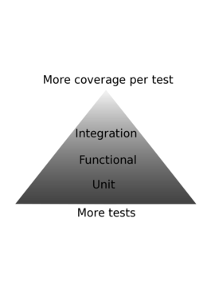
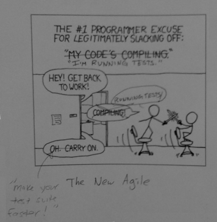

Developer Testing Tricks Notes
These notes are mainly a distillation of testing knowledge in preparation for the DTT talk and are by no means comprehensive on the topic of testing.
The examples will use rspec and focus on testing strategies in different situations. The concepts are applicable to rspec and test/unit or derivative technologies.
Note: ExampleGroup == TestCase class and Example == TestCase instance
Reasons to test
- Creates an executable specification and example usage, with documentation that stays in sync
- Domain Driven Design / Impedance Matching (The language of the developers and customer should be as close as possible)
- Helps you separate requirements from implementation
- To support experimentation and refactoring
- Empirical software development
- To keep your code safe from other developers
- To keep your code safe from yourself
Test Types
- Method
- Audience
- Scope
- Unit
- Functional
- Integration
Method of test
Automated & Manual
Manual Testing
- QA
- Exploratory testing
- Using script/console & irb (Manual Unit testing)
- Using the debugger
Traditional QA
A tester runs through a test script and verify the app is working correctly.
Exploratory testing
Advantages
- Low overhead (does not require a large initial investment)
- Flexible
- Humans are very smart
- We can rely on experience
- Humans can easily evaluate soft criteria
- For example, does site looks good?
Disadvantages
- Expensive to repeat
- Manual testing requires a human's time and focus.
Automated Testing
- Script that runs a test suite.
- xUnit
- rspec
- Story Runner
- FIT
- Load test program
Advantages
- The tests are automated so it is inexpensive to run the test once written.
- Tests are run more frequently
- TDD
- Less bugs
- Bugs are easier isolate
- See Reasons to Test section
Disadvantages
- Requires an investment to set up and maintain
- Requires more skill
- Require judgement on what level to specify the software
Audience of test
Customer Acceptance & Developer
Customer Acceptance Test
Advantages
- A Customer test suite shows the list of the application's features
- Helps the customer and developer have a stronger grasp on the feature set
- Helps the developer focus on the problem first, rather than the solution
- These tests tend to be less affected by refactorings
- Abstracted from the test implementation and ultimately the implementation of the software
- You can change implementations and still use the stories
Disadvantages
- Requires more framework investment
- FIT fixtures
- Story Runner Steps
- More overhead in writing and maintaining tests than developer centric tests
- Disconnect between the test code and its implementation (tests are a black box)
Developer Test
- xUnit
- rspec
- Is your software doing the right thing correctly?
Advantages
- Tests are structured by the software implementation
- Provides greater isolation into the workings of your software
- Less overhead to use when developing software
Disadvantages
- Customer cannot "understand" these tests
- No unified list of features
- More affected by refactorings
Scope of test
Unit, Functional, & Integration

Unit Test
- "Does the application do things correctly?"
- The level of testing is relative. Usually your application's unit tests are the lowest level of your software system.
- Java unit tests (tend not to not use the database)
- Rails unit tests (tend to use the database)
- Unit tests in a particular level are usually grouped together.
- A small unit of conceptual behavior. This means multiple objects and architectural layers can be crossed. In the case of Rails, a unit test typically touches the database. This may not be the case in other db patterns, such as the repository pattern.
Advantages
- Avoids combinatorial explosion
- Superior defect isolation
- Encourages decoupling of software
- Fast
Disadvantages
- Does not cover integration of software
- Does not protect you from testing the wrong thing
- "Can lose the forest through the trees."
- Assumptions must be made to keep the tests fast
Functional Test
- Covers public functionality
- Ensures that the software is doing the right thing
- Does the software fulfill this piece of functionality?
- There should be full functional coverage over your application
Advantages
- Covers functionality of the application.
- End to end coverage of the public api
- If software is simple enough, functional tests may be sufficient
Disadvantages
- Combinatorial explosion
- Slower
- Not as focused as Unit Tests
Integration Test
- Test that exercises multiple layers of the system
- Rails Integration tests exercise all levels of the Rails stack
- Selenium/Watir tests exercise the Rails stack and client side logic
Advantages
- Tests parts and interactions that other tests miss
Disadvantages
- Slow
- Difficult to isolate defects
- Combinatorial Explosion
Examples
Enemy Unit Test
Consider mentioning "Enemy Unit Tests" ( http://groboutils.sourceforge.net/testing-junit/art_eut.html ). These are tests to ensure that you understand how an external/third-party API behaves, and that future releases of the API do not change with respect to your expected behavior. There is a related mock/testing pattern (originating from jMock article or tdd mailing list, can't remember) where you create a "proxy" object around third-party API classes. This proxy only exposes the API methods which you actually use. It also provides an isolated place to react to API changes in future releases of the third-party library. For a real-world example of this, see GemInstaller::GemRunnerProxy#create_gem_runner (http://geminstaller.rubyforge.org/svn/trunk/lib/geminstaller/gem_runner_proxy.rb). These approaches can also help with test speed and performance, because you can be more aggressive with mocking third-party API calls, since you know the third party API and proxy are working correctly. The proxy classes also provide an easy and centralized place to do the mocking (although this is less of a concern with the easy of class-method mocking in Ruby vs. Java). - ChadWoolley
The structure of a test
- Setup
- Preconditions
- Execution
- Postconditions
Teardown
describe Car do fixtures :cars describe "#start" do attr_reader :car before do @car = cars(:corolla) end
describe "when the engine is off" do
before do
car.should_not be_running
end
it "turns on the Engine" do
car.start
car.should be_running
end
end
describe "when the engine is on" do
before do
car.start
car.should be_running
end
it "raises an StarterGrindError" do
lambda {car.start}.should raise_error(StarterGrindError)
end
end
end end
Preconditions
- Set the context of your test
- Communicate the constraints of the test
- Guard against false negatives
- The empty collection problem
- Nil expected value
Execution
- Execute your SUT (System Under Test)
- Make it clear where you are executing the SUT
- I tend to separate the preconditions, execution, and postconditions with a new line
Postconditions
Verification that your SUT altered state correctly and/or interacted with its collaborators correctly.
Code Coverage
Statement Coverage
Advantages
- Easy to set up
- Clear and easy to understand metric
Disadvantages
- Does not measure coverage of boolean statements
- Does not measure coverage of invalid data
- Easy to game the metric
Logical Coverage
- Is your feature fully covered?
- Mutation Testing
Advantages
- Verifies your tests have full logical coverage
Disadvantages
Happy Path Testing
Tests the piece of functionality in a "normal" situation.
class UsersController def create @user = User.new(params[:user]) if @user.save redirect_to users_path(@user) else render :template => “new” end end end
describe “A visitor joining the site” do it “creates a User account“ do open “/”
click “link=Signup”
type “user[name]”, “Bob”
type “user[password]”, “password”
type “user[confirmation]”, “password”
click “submit”
assert_text_present “Welcome Bob”
end end
Edge Case Testing
- Tests the edge cases of the piece of functionality.
- Invalid Data
- Invalid fixture state
- Ensures full code coverage
class UsersController def create @user = User.new(params[:user]) if @user.save redirect_to users_path(@user) else render :template => “new” end end end
describe UsersController do describe “#create” do describe “with valid data” do it “creates a User and redirects to the User's page” end describe “with invalid data” do it “renders users/new with errors” end end end
Lifecycle
- The lifecycle of a test and how testing strategies/refactorings change over the life of the test
- TDD (tests to drive the design of the software)
- Regression Testing (tests to ensure that your software still works when you make changes)
- Retirement of a Test
TDD
- These tests drive design
- Tests should be refactored
- You can manually test drive your design, its just alot slower and you dont get to keep the tests
Goals of TDD
- Specification, not validation
- Feedback
- Developer makes smaller steps
- Developer knows when the code is finished
- Developer has an example of using the implementation code
- Developer maintains focus on the objective
- Iterative
- Developer rhythm
- Confidence
- Simplicity
- YAGNI
- Make a regression test
Test your tests
- Red then Green
- Its easy to make a test that does not test anything.
- For example, testing the elements within an empty collection
- Use Preconditions to set the context of your test
Granularity of tests
- Confidence & familiarity with a particular technology determines how granular your unit tests tend to be
- e.g. I'm not familiar with AR proxy objects, so I will be very granular when using them.
- Project maturity (and to a lesser degree, confidence & familiarity) affects whether to work top down (Integration tests first) or bottom up (Unit tests first).
- When starting out, it makes more sense to start with higher level tests.
- As you gain more domain infrastructure, it becomes easier to start with unit tests.
Regression Test
- After the TDD phase, your tests serve to make sure your software still works.
- Tests live longer than the code (the implementation often changes).
Regression Test Goals
- Verify your software does not break due to changes in implementation or state
- Courage
- Support Experimentation & Refactoring
- Documentation
- Clarity
- Fail in the right places
- Avoid crying wolf due to unnecessary brittleness
- Keep tests predictable
Tests as documentation
- Tests should clearly document your system
- Refactor the test if it is not clear
- Nested ExampleGroups? are very helpful in showing contextual logic
- Tests should match the logical layout of your software
Monitoring your tests
- Are you getting good coverage?
- Are these tests still relevant?
- How often do these tests fail?
- How long does your suite take to run?
- Are your tests easy to run or do they get in the way?
- If the tests are not run, they decay.
- The tests need to be run regularly. Before checkin, Autotest, and/or CI.
Testing untested software
- Working Effectively with Legacy Code - Michael Feathers
- Seams
- Places where you can alter behavior without editing the code
- Dont forget to manually test your tests
- Rails legacy testing tends to be easier than Java legacy because there is a natural MVC separation.
Retroactive TDD
- Comment out the implementation you want to test
- Write the tests
- Watch them fail for expected reasons
- Uncomment the implementation
- Watch the tests pass
- Refactor
Retirement of a Test
[[ESH: I talk about "retiring" tests. Slightly less violent :-) ]] If the test no longer contributes to logical coverage in its particular level (unit, functional, integration, etc), then retire it.
Obsolete Tests
- They add clutter and make your test suite harder to read
- They reduce productivity by making it more difficult to reason about your software
- They take time to run
- They take space
Consequences of Refactoring
Extract class or module refactoring can be supported by existing tests. You may or may not need to test drive the extracted module. It depends on your situation. If you are unsure, error on the side of writing tests.
Why Test Drive your refactorings
- You can get defect localization
- The tests help the design of your extracted module
Why Not Test Drive your refactorings
- TDD may disrupt your "refactoring flow"
- You may want your refactoring to be a spike to quickly experiment on an idea
- You can always retroactively TDD your changes
- You already have test coverage
When finished with the refactoring
- Refactor your tests
- Move the tests into the correct places
- Use mock proxy technique to verify your refactored functionality is still being covered
ExampleGroup organization
- The description of the ExampleGroup should clearly state the preconditions of the Example
before and after callbacks
- Sets up preconditions and postconditions.
- Set up and clean up fixtures
- Sets up the contextual situation of the ExampleGroup
Single level ExampleGroup
One ExampleGroup per implementation class and/or context. Each Example has the pre-conditions and post-conditions in its name.
describe User, “#enter when the User is not in the Room” do
attr_reader :user, :room
before do
@user = users(:joe)
@room = rooms(:basement)
room.occupants.should_not include(user)
end
it “causes the User to enter the passed in Room” do
user.enter(room)
room.occupants.should include(user)
end
end
describe User, “#enter when the User is in the Room” do
attr_reader :user, :room
before do
@user = users(:anne)
@room = rooms(:basement)
room.occupants.should include(user)
end
it “raises an Error” do
proc {user.enter(room)}.should raise_error
end
end
Advantages
- Often times the simplest thing that could possibly work.
- Easy to add individual Examples.
- Easy to find individual Examples.
Disadvantages
- Not well balanced Example organization when conditions get complicated and there is more than one level of edge cases.
Nested ExampleGroup
Nested ExampleGroup
describe User do
describe “#enter” do
attr_reader :user, :room
describe “when the User is not in the Room” do
before do
@user = users(:joe)
@room = rooms(:basement)
room.occupants.should_not include(user)
end
it “causes the User to enter the passed in Room” do
user.enter(room)
room.occupants.should include(user)
end
end
describe “when the User is in the Room” do
before do
user = users(:anne)
room = rooms(:basement)
room.occupants.should include(user)
end
it “raises an Error” do
proc {user.enter(room)}.should raise_error
end
end
end
end
Advantages
- Easily show multiple levels of situational edge cases
- DRY
- Composable
Disadvantages
- More complicated than Single level ExampleGroup
ExampleGroup methods
Use class methods to define ExampleGroups and Examples. (Shoulda makes heavy use of this technique.)
describe "GET new" do
should_require_login do
get :new
end
Advantages
- DRY.
- Concisely creates common Examples.
- Makes common cases take less space
- More attention is given to more interesting functionality
Disadvantages
- Removed from the implementation of the test
- Temptation to overgeneralize
- Tests become less malleable
Mulitple preconditions / execution / postconditions
Mainly used for scenarios and higher level testing
Example organization within an ExampleGroup
- Each Example should be cohesive
- The description should simply state the behavior
- If the test cannot be stated clearly, then there is a problem
Bundling assertions in each Example
- The most common way to write Examples
- Best when the assertions are grouped logically
Advantages
- Easy and low effort to implement
- Lower barrier to entry
- Easy to start test driving
Disadvantages
- Examples can lose cohesion and be confusing if too many diverse assertions are added.
- Its more difficult to manage tests when performing an extract functionality refactoring
One assertion per Example
Advantages
- Loose coupling and high cohesion of tests
Disadvantages
- More up front effort required
One Example, several variables for each set of preconditions
One Example has the same assertions called on several instance of the SUT, each having different preconditions.
- Instead of ExampleGroup > Example hierarchy, its Example > Variable.
More than 1 Execution (each with preconditions and/or postconditions) in a single Example describe Stack do describe "#pop" do attr_reader :no_item_stack, :one_item_stack, :multiple_item_stack before do @no_item_stack = Stack.new @one_item_stack = Stack.new(1) @multiple_item_stack = Stack.new(1, 2) end
it "removes and returns the last item when one exists" do
no_item_stack.pop.should be_nil
no_item_stack.should be_empty
one_item_stack.pop.should == 1
one_item_stack.should be_empty
multiple_item_stack.pop.should == 2
multiple_item_stack.should_not be_empty
end
end
end
Advantages
- Elegant way to avoid combinatorial explosion
- Best when describing a scenario or progression of state
- The logical unit is the progression in this case
Disadvantages
- Cannot make an individual Example with description for each set of preconditions
- This can lead to large and unfocused Examples
Test Fixture
The state of your world.
Rails Fixtures
Rails fixtures are the state of your database. The default implementation is a global dataset.
- Keep your fixtures as organized and simple as possible.
- Beware of combinatorial explosion.
- There are parallels to functional testing combinatorial explosion.
- In your tests, use preconditions. Dont make assumptions about your fixture values because fixtures change.
Transactional fixtures
Begins a database transaction when the test begins and rolls back the tranaction after the test finishes.
Advantages
Disadvantages
- Cannot be used to test database transactions
- Cannot be used to test code across processes
Instantiated fixtures
Clears the table(s) and inserts the fixture records.
Advantages
- Can be used to test database transactions
- Can be used to test code across processes
Disadvantages
Test Driving your fixtures
- Verify your fixtures are in a valid state.
- Test drive a change to your DB schema by making a fixture test.
- Verifies that your fixtures reflect reality
- Keeps your fixtures maintainable
Discourages your fixtures from getting large describe "users.yml" do attr_reader :user
describe "bob" do
before do
@user = users(:bob)
end
specify "was in the green and red room" do
user.rooms.should include(rooms(:green))
user.rooms.should include(rooms(:red))
end
end
end
Fixture Scenarios
- Keeps each scenario small and focused.
Object Mother
Programmatically set up object state.
- Keeps each scenario small and focused.
State and Interaction Testing
State testing
- The most common form of testing.
- More straightforward and easier to understand in state based situations.
- Cannot be used when you are testing behavior that does not involve state.
- Can cause large amounts of setup in certain situations.
Advantages
- Often times the simplest way to set up state.
- If state is difficult to set up, sometimes abstracting setup methods and objects can alleviate the pain.
- Often produces more realistic and integrated scenarios than interaction testing.
- Independent of implemnetation.
Disadvantages
- Sometimes its more difficult to set up the preconditions.
- You cannot unit test logic that communicates with external processes with state based tests
- When used exclusively, can obfuscate the focus of a test.
Interaction testing
- Certain types of tests can only be tested through the SUT's interaction.
- Often simpler in situations where message passing is emphasized.
- Often simpler when you want to test unit behavior that requires plenty of code to set up
- Often more complicated in situations where state is heavily used.
Advantages
- The only way to unit test certain situations (i.e. external processes)
- Can be used in conjunction with state based testing to clarify focus of the test.
Disadvantages
- Takes more work to set up that state based tests.
- Test code can look exactly like the implementation code.
Test Double (Interaction Testing)
Using test doubles can make hard tests simple and impossible tests possible. However, like any tool, it can be overused and create overly complicated tests. State based tests are usually preferable when they are easy to set up and are comprible in speed because they are usually simpler.
Mocks
Objects pre-programmed with expectations which form a specification of the calls they are expected to receive (From Mocks arent Stubs)
Advantages
mock-based testing in conjunction with TDD/BDD can drive a better architecture, with Loose Coupling and High Cohesion ( http://www.c2.com/cgi/wiki?CouplingAndCohesion ). Example: Identify a piece of functionality you want, and start test-driving it in a new Class. When you come to a piece of logic that is UNRELATED to your current class (not cohesive), MOCK it out as a Collaborating Class, and continue implementing the (cohesive) functionality of the Current Class. When you are done with the Current Class, look at how you have used Mock Objects. The functionality and Collaborating Classes you are mocking serves as the blueprint for the actual implementation of the Collaborating Classes. Pick one of the non-existent Collaborating Classes, and start test-driving it into existence to fulfill the API which you discovered via the mocks in the original class. Repeat until your entire app functionality is complete, and create Functional/Integration tests as you evolve cohesive groups of classes/functionality with higher-level APIs or external interfaces. This approach results in High Cohesion (classes do only one thing, and do it well), and Loose Coupling (narrow, well-defined, flexible APIs for public class methods). This approach works better with Green Field, non-web apps; and is less useful on in apps which rely on a well-defined, highly coupled, and pervasive framework/API (such as Rails apps). It also works particularly well with projects that use a Dependency Injection approach, where you can fully realize the benefits of loose coupling (http://geminstaller.rubyforge.org/svn/trunk/lib/geminstaller/dependency_injector.rb) - ChadWoolley
Disadvantages
Some questions to ask
- Do mocks make your test simpler or more complicated?
- When are mock the only reliable way to test something?
- When do they make more sense to use than state based testing?
- When do they not make more sense to use than state based testing?
Other usages of mocks
- Using mocks to clarify the test (even state based tests)
- Using the mock proxy pattern to get mock validations while calling the real method
Example
Show TDD using a mock that causes the test to pass but is a bug because the mocked method is not implemented.
Stubs
Provide canned answers to calls made during the test, usually not responding at all to anything outside what's programmed in for the test. Stubs may also record information about calls, such as an email gateway stub that remembers the messages it 'sent', or maybe only how many messages it 'sent' (From Mocks arent Stubs)
Spies
Message buckets that you can verify. Every message passed to the object is stored. Useful for testing concurrency (threads & external processes).
Dummies
Objects that are passed around but never actually used. Usually they are just used to fill parameter lists (From Mocks arent Stubs)
Fakes
Fake objects actually have working implementations, but usually take some shortcut which makes them not suitable for production (an in memory database is a good example). (From Mocks arent Stubs) Fakes are often a more formalized form of a mock. When you find yourself repeating a mock, refactor to a fake. Fakes provide a logical object your SUT can interact with.
Model Testing
Controller Testing
View Testing
- Test aspects important to the functionality of your site.
- Dont overspecify your software.
- If changing a <div> to a <p> breaks your test, then something is wrong.
Rails Integration Testing
Webrat Testing, HttpUnit, WebUnit
- Does not work with javascript.
- Faster than browser integration testing (Selenium, Watir)
Javascript Testing
Client/Server testing
- Concurrency Testing
- Two mongrel processes
- One external state and queue process
- Browser object
Selenium Testing
- An automated human.
- Tests take longer. User Scenario based Examples that simulate a human. Longer and less frequent Examples.
- Dont check every possibly edge case, because the suite will be very long.
- Check the happy path with a couple of common edge cases.
- Exercise and validate as much client/server interaction as possible.
Polonium
- Make your Selenium tests easy to write and read using a DSL
- Using wait_for to handle Selenium's concurrency
- Selenium also uses the Browser object
TDD Rhythm
- Red/Green/Refactor
- When implementing a feature, run the test. The test should go red. Make the test green.
- When refactoring, make a change and then run the suite. If there is a failure, there is a problem with the refactoring.
- Very fast feedback loop.
- Compare with manual testing.
- i.e. implement, refresh the browser, type in the fields again, and verify.
- Learn how to effectively use your Editor
- Get to the point where you do not have to think about the mechanics of using your editor
- This allows you to think at a higher level while quickly manipulating code
- Avoid the mouse if you can
- Be able to move quickly in your editor. Speed helps you think more clearly.
Frequent checkins
- A good TDD rhythm enables frequent checkins
- Frequent checkins leads to better source integration with the rest of your team
- Implement changes in smaller increments. Less risk that what you are working on is broken.
- Changes are more cohesive and focused.
- Easier to track.
- Better rhythm.
- Faster development.
- Reverting
Small checkins let you be more aggressive. If you go down a rathole, you can always revert everything, and not worry about losing anything you wanted to keep - ChadWoolley
Usages and Tips for Frequent Checkins
- I get nervous when not checking in for a while.
- Why have I not checked in?
- Am I going down a rat hole?
- Do I need to revert?
- When planning a new feature or refactoring, think about the smallest possible chunk you can start with that will get you to a green test suite and checkin. Do it, check in, then think about the next smallest chunk. This helps avoid huge multi-day commit sets, and the related integration problems - ChadWoolley*
- Frequent checkins allow you to rely on Continuous Integration to catch unrelated regressions early, especially ones that are only caught by slow-running Integration Tests that you don't want to run manually - ChadWoolley*
Better Design leads to more productivity
- Objects and methods should be made so you can see it and instantly know what its purpose is.
- If the method is large, it takes time to scan the method and figure it out. This gets developers thinking about the mechanics of the implementation rather than thinking at a higher level.
- Less big objects that do everything.
- Prefer good method naming to comments.
- Cohesion should happen both in your tests and in your implementation.
Design your software to be testable
- Often times, easily testable software is better design.
Sometimes designing software to be testable makes the design worse
- Why?
- Maybe a functional test is sufficient.
- Find a good compromise between implementation and test design.
- Maybe its not worth automating the testing in that case.
Ping pong pairing
- It involves both people in both roles (driver & thinker).
- An effective way to get around the laptop distraction.
Test Execution Time
- If tests take a long time to run, they get run less often.
- The longer the period between the defect introduction and the discovery, the longer it takes to fix.
- This affects developer flow.
- "Fast" is ~< 2 seconds for 1000+ tests.
- There is a threshold of productivity reached for suites that run less than 5 seconds.

Advantages
- Payoff savings in test run time and frequency.
- There is also savings from recognizing defects earlier.
- Long suites break work flow.
- Long suites add up.
- "I'm running tests now, time to get coffee."
- Slow tests are mainly a long term issue that slowly saps developer productivity.
Disadvantages
- Large investment to keep suite fast.
- Slow suites do not matter as much for short term projects.
Test Run Ordering
- Prefer to run the tests that involve the pieces you are working on first.
- Prefer to run the unit suites first, then the functional and integration suites.
- Early tests should isolate issues as much as possible.
- Removing dead weight
- Mocks
- Combining tests
- If a set of tests don't fail often, it may be useful to combine them into a single test.
- Make a new Test Suite
- Move tests that are slower into a separate suite
- Pre-checkin suite
- Fast tests can be run before checking in
- CI
- Can be responsible for running slower tests
- Split out different suites. Make your suites progressively slower.
- Track and compare suite time runs from month to month.
- Discipline to keep the suite short.
Move tests that more relevant (fail frequently for good reason) into the pre-checkin suite.